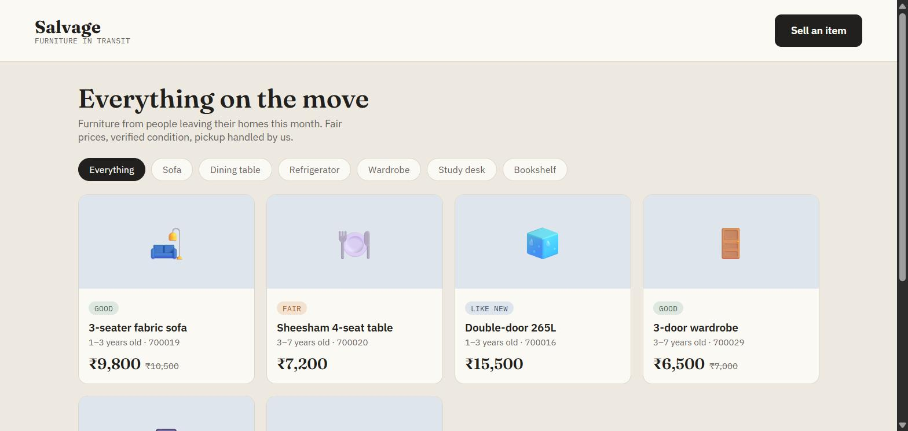
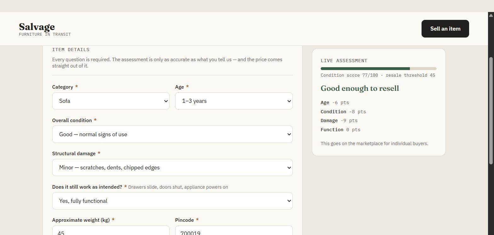
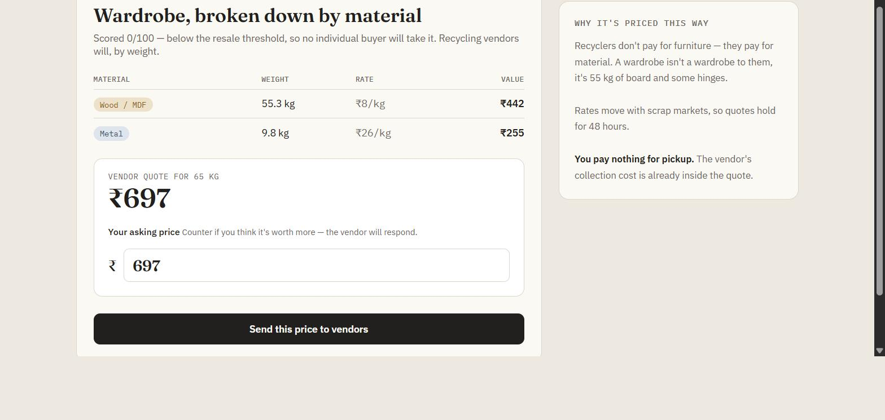
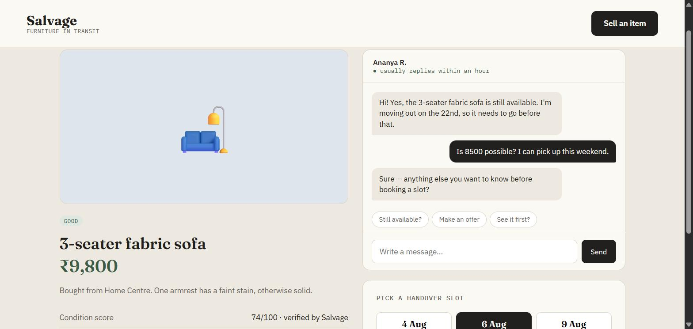

01 · The problem
Three ways out of a flat. All three break.
The source problem, from Razorpay's Fix My Itch list, names all three at once: families relocating cannot easily sell, donate, or responsibly dispose of old furniture. They read like one complaint. They are three different systems failing for three different reasons.
Sell it
List on a classifieds app, guess a price, field offers at a third of it, then arrange your own transport with a stranger.
Price discovery, then logistics
Give it away
Find a charity that takes furniture, in your city, that will collect it, in the ten-day window before you hand over the keys.
Matching, then collection
Throw it out
No municipal bulk pickup. Find a kabadiwala willing to climb four flights for a wardrobe he prices by looking at it.
Access, then effort
This chain is the behaviour the problem statement describes, not measured data. Every link in it is a decision the seller was not equipped to make: what is it worth, who wants it, and who carries it downstairs.
02 · Who it's for
Three sides, one two-week window
The relocator is the wedge. The buyer and the recycling vendor are both downstream of whether she opens the app during the short stretch when clearing the flat is genuinely urgent.
The relocator
Moving city or apartment on a deadline, with three to ten pieces to clear.
Needs: speed and certainty. A fair number now, not a slow negotiation with lowballers.
The budget furnisher
Setting up a new home, price-sensitive, buying sight-unseen from a stranger.
Needs: proof that “good condition” means something, before travelling to look at it.
The recycling vendor
Runs material aggregation, sources today by driving around and by word of mouth.
Needs: pre-sorted volume by material and area, so a truck run is worth making.
Intent is not a persona trait. It is a date on a lease.
03 · The reframe
Reselling a sofa and scrapping one are not the same business
They share a photo and an address, and nothing else. One is a peer-to-peer marketplace with price discovery and trust; the other is a commodity sale priced by weight. Bundling them behind one “list your item” button is what makes both feel broken.
Put a decision engine in front of the fork, so the person standing in the room never has to know which lane they are in.
Every competitor assumes the user has already made that call — OLX assumes it's sellable, a scrap dealer assumes it isn't. The triage step is the part nobody owns, and it is the only part of this product that has to be right.
04 · How it works
One form, one number, two lanes
Eight mandatory answers. No free-text listing box, no pre-filled defaults, no price until the form is complete. The panel beside the form recalculates as you type, so the seller watches the verdict form rather than receiving it.
score = 100 − age×3.2 − condition − damage − function
Every deduction is shown to the seller as it happens. A rejection that says “−30, major structural damage” is arguable; an opaque one is just the app saying no.
- 1Suggested price from category, age and score, with a comparable range
- 2Seller sets their own ask; the tool argues back in both directions
- 3Listing goes live; buyer chats, offers, and books a handover slot
- 4Crew, window and transport charge stated before confirming
- 1Weight split into materials by the category's composition
- 2Each stream priced per kg at the current board rate
- 3Seller counters; the vendor accepts, haggles, or walks with a reason
- 4Pickup enters the vendor's queue, grouped by area
Drag the score across the fork
Good enough to resell
Goes to the marketplace for individual buyers.
₹9,500
Comparable sales ₹8,400 – ₹10,800
Sofa · 45 kg
Better off recycled
No buyer will take it. A recycler pays for the material instead.
₹399
A two-year-old fabric sofa, good condition, a few scratches, everything works

One surface for both intents — no buyer/seller mode switch. Condition badges and the struck-through suggestion sit on the card, so a price is legible before the tap.

The panel shows the score, the verdict, and the points each answer cost. Nothing is pre-answered; all eight fields validate with a reason, not a red asterisk.

A wardrobe scoring 0 becomes 55.3 kg of board and 9.8 kg of metal — ₹697. The seller still names their own price, and the vendor answers it.

Negotiation stays in the product. Put a number in a message and the seller accepts or counters against the real listing price, then a slot picker turns the deal into a booking.
05 · Feature inventory
Nine features, nine specific failures
Nothing in the build exists because a marketplace usually has it. Each one is pointed at a named way the current experience breaks.
06 · Business model
Two paths, two different ways to get paid
The build charges nothing today. But the split that made the product work also decides the revenue model, and the two halves do not monetise the same way.
The ₹499 transport charge already in the checkout is the seed of it. Logistics is the thing the platform actually performs, so it is the thing it can defensibly charge for.
Buyer pays ₹10,299 · platform keeps the transport line
The classic aggregator margin — what the seller accepts versus what the vendor pays for the same board and metal. Exactly how a kabadiwala prices today, only visible.
Hatched because it is not built — no vendor pays anything in the prototype
07 · Market
A large first-hand market, and almost no second life
Furniture keeps being bought. What happens at the other end of ownership is handled almost entirely by an informal sector that nobody has instrumented.
India's e-waste alone carries an estimated ₹51,000 crore of recoverable material, most of it never formally recovered. Extended producer responsibility targets rise to 80% collection by FY28 — a formalisation deadline arriving whether or not the pipes exist.
Sources: Mordor Intelligence, India furniture market, 2026 update ($29.27B 2025 → $31.51B 2026 → $45.52B 2031, 7.63% CAGR; wood furniture $19.54B 2026). Expert Market Research and Renub give $26–27B for 2025 on different scopes. E-waste volume, formal-recycling share and recoverable value: Down To Earth reporting on CPCB data, 2026. Informal workforce range: WIEGO and allied estimates. EPR targets: E-Waste Management Rules schedule.
08 · Competitive landscape
Everyone covers one lane well
Read the matrix by column, not by row. The triage column is empty for every existing player, because each one is built on the assumption that the user already knows which lane they are in.
09 · Honest scope
What is real, and what is staged
This is a prototype built to prove an interaction model, not a launched product. Being precise about the line matters more than the demo does.
- ✓Scoring and pricing engine on a server, not in the browser
- ✓Postgres schema, accounts, sessions, and real listings that survive a refresh
- ✓Photo uploads through short-lived signed tokens, limits enforced twice
- ✓Material rates tunable in the database, so a board-rate change isn't a deploy
- ✓The full intake → assessment → route → publish → book path, end to end
- ✕Vendor responses — rule-based bands, not a real recycler network
- ✕Buyer replies in chat, generated against the listing rather than by a person
- ✕Payments, escrow, and payout settlement — none of it exists
- ✕“Verified by Salvage” is the seller's own form answers, restated
- ✕Pickup is a status flip, not a dispatch system. And there is still no donate path
The teardown listed “no persistence, no authentication, constants in the browser” as open gaps. Fixing the last one was the most instructive: the scoring constants lived in the browser, which meant a seller could open devtools and hand themselves a score of 100. A pricing engine the seller can edit is not a pricing engine. It moved behind an API, and the material rates went into the database so a rate change stops being a deploy.
10 · How it would scale
Six phases, each with one question to answer
Logistics-heavy marketplaces are won a city at a time. The order matters more than the ambition: every phase below exists to de-risk the next one.
Validate the triage model, by hand if necessary
One apartment complex, a form, and a human pricing it. The question is not whether the UI works — it is whether a seller trusts a number they didn't negotiate.
Replace mocked logic with real inputs
Photo-based condition grading is the highest-leverage build in the whole plan: it is what stops the price being either party's opinion. Real vendor rate feeds replace the static per-kg table.
Own logistics in exactly one city
Pickup is the differentiator against OLX. Outsourced and unreliable early, the differentiation evaporates and the product becomes another listings page.
Formalise the vendor side
A dashboard of aggregated pickups by area and material, with standing rate cards. This is the step that turns a listings app into B2B infrastructure — stickier than the resale marketplace alone.
Widen the intake beyond moving
Renovation clear-outs, estate cleanups, office relocations. Larger baskets, same loop, no new engine.
Replicate city by city, on density
Enough sellers and buyers in one metro that a pickup route is efficient, before the next metro opens.
11 · Open risks
The threshold is doing too much work
One point of condition score currently decides whether an item is worth thousands or worth its weight. That is the sharpest weakness in the design, and it is mine, not inherited.
₹483
13.5 kg wood + 20.3 kg foam + 11.3 kg metal
₹6,700
Same object, one answer changed on the form
The fix I'd test first: a middle band from roughly 30 to 45 that offers both outcomes and lets the seller choose — a worn sofa someone would happily take for ₹1,500 is worth more to everyone than ₹483 of foam and board. The threshold should be a routing default, not a verdict.
Sellers, buyers and vendors all need mass at once, and none of them show up for an empty marketplace. The recycle path is the only one that can be seeded with a single phone call to one vendor.
A badge that restates the seller's own answers inherits the exact trust deficit the product is positioned against. Either it gets a real check, or it loses the word “verified”.
Trucks, loaders, scheduling. This is where the product either wins or quietly becomes the same broken promise as municipal pickup, with better typography.
12 · Measurement & what it taught me
Five numbers that would tell me the truth
Usage would not settle whether this works. These would — and the first one is the only one that measures whether anybody believes the assessment.
Share of asks that land inside the suggested range
Trust in the assessment, not usage of it. Everything else is downstream.
Time from listing to pickup, split by lane
The lease date is the real deadline. A blended average hides which lane is failing.
Vendor acceptance at first offer vs after a counter
If nothing clears without haggling, the rate table is wrong, not the sellers.
Repeat usage from the same building or society
Density is the whole logistics game. One flat per postcode never pays for a truck.
No-show rate at scheduled handovers
The exact failure this product exists to remove. If it survives, nothing else matters.
Building it found the flaw a document would have hidden
“Route below the threshold to recycling” reads fine in a spec. It took a working engine and two real numbers, ₹483 against ₹6,700, to see that one point of score was deciding fourteen times the value.
Show the arithmetic and the argument changes shape
A verdict invites a fight. A verdict with “−9, minor damage” beside it invites a correction. Same decision, completely different relationship with the person receiving it.
The first version answered a question nobody asked
I built a triage tool first: pick a category, get a verdict. It was tidy and useless, because the actual job is clearing a flat, not classifying a sofa. The rebuild put the marketplace at the front and the engine behind a form.
A prototype's job is to be specific enough to be wrong
Every number in it is arguable — that is the point. The teardown above exists because the build made the weak joints visible, and a PRD with the same content would have hidden them behind the word “appropriate”.
Happy to argue about the threshold, or where the middle band should sit.
I'm interviewing for Associate Product Manager and Product Analyst roles. If you've got a problem that's still fuzzy, I'd like to hear about it.